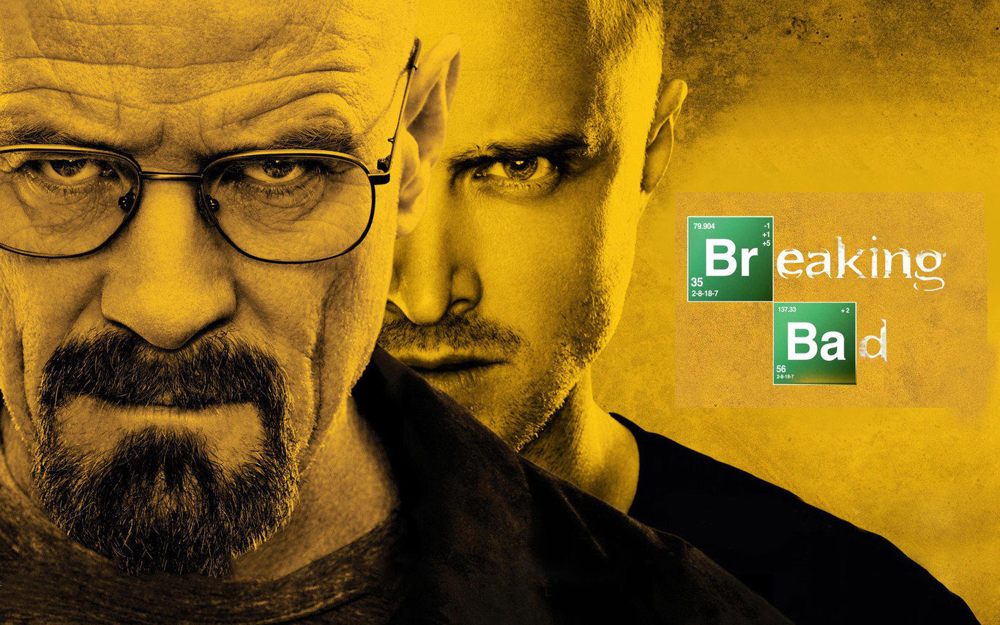
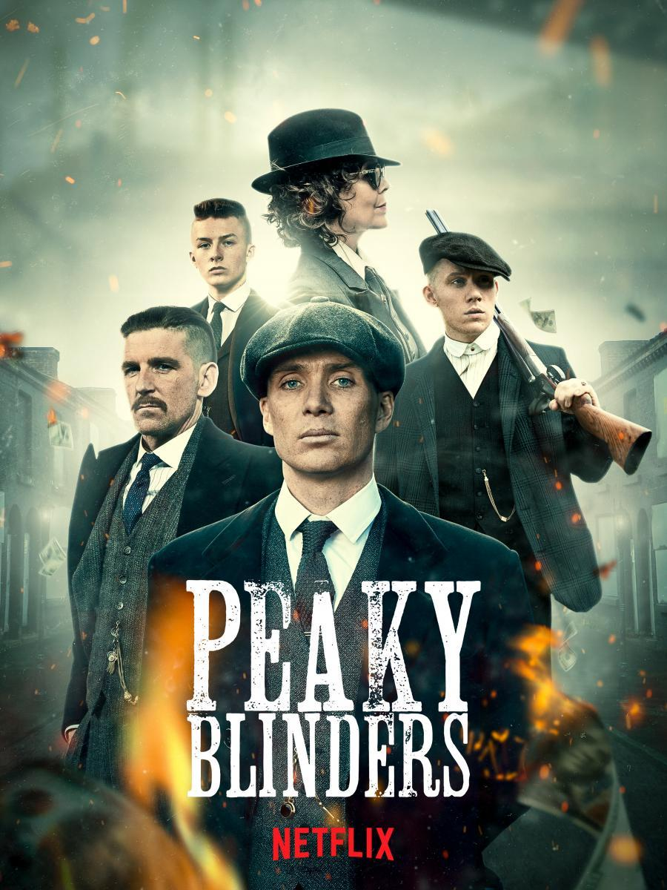

HOUSE OF THE DRAGON
HBO presenta "La Casa del Drasón", una serie original basada en el libro de George R.R. Martin "Fuego y Sangre"
Ambientada 200 años antes de los eventos de "Juego de Tronos", la serie sigue la emocionante historia de la Casa Targaryen. Steve Toussaint interpreta a Lord Corlys Velaryon.
Rhys Ifans como Otto Hightower, la mano del rey Viserys Targaryen, interpretado por Paddy Considine. Sonoya Mizuno interpreta a Mysaria, fiel aliada del príncipe Daemon Targaryen. También participa Olivia Cooke, interpretando a Alicent Hightower. Eve Best a su esposa y jinete de dragón, la princesa Rhaenys Targaryen.
La serie comenzó con la emisión de un episodio piloto dirigido por Miguel Sapochnik, también director de algunos de los capítulos más aclamados de Game of Thrones, como La batalla de los bastardos o Vientos de invierno.54 Además, Sapochnik ejerce como showrunner junto al guionista y productor cinematográfico Ryan Condal.546 El rodaje comenzó en marzo de 20213 y terminó en febrero de 2022, tomando un total de 11 meses de grabación.
Breaking bad
Breaking Bad es una serie de televisión dramática estadounidense creada y producida por Vince Gilligan. Narra la historia de Walter White (Bryan Cranston), un profesor de química con problemas económicos a quien le diagnostican un cáncer de pulmón inoperable
Los simuladores

Los simuladores es una serie de televisión argentina, creada y dirigida por Damian Szifron y protagonizada por Federico D'Elía, Alejandro Fiore, Diego Peretti y Martín Seefeld. Producida y emitida por Telefe, la serie estrenó su primera temporada durante 2002, y la segunda en 2003, finalizando durante los primeros días de 2004
Peaky Blinders
Peaky Blinders es una serie de televisión inglesa de drama histórico, emitida por el canal BBC Two. La serie está protagonizada por Cillian Murphy y se centra en una familia de gánsteres de Birmingham, durante los años veinte y del ascenso de su jefe, Thomas Shelby.
Stranger things

Stranger Things es una serie de televisión web estadounidense de suspenso y ciencia ficción coproducida y distribuida por Netflix.4 Escrita y dirigida por los hermanos Matt y Ross Duffer, y producida ejecutivamente por Shawn Levy,5 se estrenó en la plataforma Netflix el 15 de julio de 2016